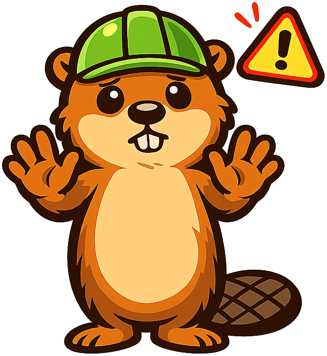

Chapter 16: Biodiversity Loss and Policy
Summary
This chapter examines the causes of biodiversity loss and the policy frameworks designed to prevent extinction. Students learn the HIPPO framework, study habitat fragmentation and wildlife corridors, and analyze key legislation including the Endangered Species Act, CITES, and cap-and-trade systems. After completing this chapter, students will be able to assess the vulnerability of species and evaluate the effectiveness of conservation policies.
Concepts Covered
This chapter covers the following 14 concepts from the learning graph:
- Endangered Species
- Habitat Loss
- HIPPO Framework
- Overexploitation
- Endangered Species Act
- CITES
- Kyoto Protocol
- Paris Agreement
- Carbon Tax
- Cap and Trade
- Biodiversity Hotspots
- Habitat Fragmentation
- Wildlife Corridors
- Species Extinction
Prerequisites
This chapter builds on concepts from:
- Chapter 6: Biodiversity and Ecosystem Services
- Chapter 10: Land and Water Use
- Chapter 15: Global Climate Change
Bailey Says: Welcome, Builders!
Alright, explorers -- time to talk about something near and dear to my beaver heart: protecting the incredible diversity of life on this planet. We've learned how ecosystems work, how energy flows, and how climate change is reshaping everything. Now we ask: what happens when species disappear? And more importantly -- what can we do about it? Everything's connected, so when one species vanishes, the ripples spread far. Let's build on that understanding!
{kind=link}
The Sixth Extinction
Earth has experienced five mass extinctions over the last 500 million years. The most recent wiped out the dinosaurs 66 million years ago. Today, many scientists believe we are in the midst of a sixth mass extinction -- and this time, the cause isn't an asteroid. It's us.
Current species extinction rates are estimated at 100 to 1,000 times higher than the natural "background" rate. A species goes extinct when the last individual of that species dies. But the process of decline begins long before that final moment.
Here's what makes this crisis different from past extinctions:
- It's happening incredibly fast -- too fast for most species to adapt
- It's driven by a single species (humans) rather than geological or astronomical events
- It's affecting virtually all groups of organisms simultaneously
- It's potentially reversible -- if we act
An endangered species is one that faces a very high risk of extinction in the wild. The International Union for Conservation of Nature (IUCN) maintains the Red List, which categorizes species by threat level:
| Category | Meaning | Example |
|---|---|---|
| Least Concern | Low risk | House sparrow |
| Near Threatened | Close to qualifying as threatened | Monarch butterfly |
| Vulnerable | High risk of endangerment | Polar bear |
| Endangered | Very high risk of extinction | Mountain gorilla |
| Critically Endangered | Extremely high risk | Sumatran rhino |
| Extinct in the Wild | Survives only in captivity | Scimitar oryx |
| Extinct | No individuals remain | Dodo, passenger pigeon |
As of 2025, over 44,000 species on the IUCN Red List are threatened with extinction. And that's just the species we've assessed -- millions of insects, fungi, and microorganisms have never been studied.
HIPPO: The Five Horsemen of Extinction
What's driving all this loss? Conservation biologist Edward O. Wilson created the HIPPO Framework as a memorable way to rank the biggest threats to biodiversity. Each letter represents a major driver:
H -- Habitat Loss
Habitat loss is the single greatest threat to biodiversity worldwide. When we convert forests to farmland, drain wetlands for development, or pave over prairies for suburbs, we destroy the places species need to survive.
The numbers are staggering:
- Over 75% of Earth's land surface has been significantly altered by humans
- Tropical deforestation claims roughly 10 million hectares per year (an area the size of Iceland)
- Wetlands have declined by 87% since 1700
- Freshwater habitats are among the most degraded on Earth
Habitat loss doesn't have to mean total destruction. Even partial degradation -- pollution, soil compaction, introduction of artificial lighting -- can make an area uninhabitable for sensitive species.
I -- Invasive Species
When species are transported (intentionally or accidentally) to regions where they have no natural predators, they can run rampant. Invasive species outcompete, prey upon, or bring diseases to native species. Think of brown tree snakes in Guam (which eliminated most native forest birds), zebra mussels in the Great Lakes, or feral cats on islands worldwide.
P -- Pollution
Chemical pollution, light pollution, noise pollution, and plastic pollution all stress wildlife. Pesticides can bioaccumulate through food chains. Nitrogen runoff creates dead zones in coastal waters. Microplastics have been found in virtually every ecosystem on Earth.
P -- Population Growth (Human)
More people means more demand for food, water, energy, housing, and materials -- all of which put pressure on natural habitats and wildlife.
O -- Overexploitation
Overexploitation means harvesting a species faster than it can reproduce. Examples include:
- Overfishing: Global fish stocks are declining; a third are overfished
- Bushmeat hunting: Unsustainable in many tropical forests
- Illegal wildlife trade: Worth $7-23 billion per year, threatening elephants (ivory), rhinos (horns), pangolins (scales), and many others
- Overharvesting of plants: Medicinal plants, timber, and ornamental species
Bailey Says: See the System!
Here's the systems-thinking twist: the HIPPO threats don't act alone. They interact. A forest fragment (habitat loss) is more vulnerable to invasive species. Climate change pushes species into new areas where they face new predators and competitors. Pollution weakens organisms so they can't cope with heat stress. Everything's connected! When you evaluate a species' risk, look for the combination of threats -- that's where the real danger lives.
{kind=link}
Diagram: HIPPO Threat Interaction Web
HIPPO Threat Interaction Web
Type: graph-model
sim-id: hippo-framework
Library: vis-network
Status: Specified
Bloom Level: Analyze Bloom Verb: Differentiate Learning Objective: Students differentiate between the five HIPPO threats and analyze how they interact to amplify species vulnerability. Instructional Rationale: A network diagram showing interactions between threats reinforces systems thinking and moves beyond simple list memorization.
Visual Elements:
- Five large nodes in a pentagon arrangement: Habitat Loss, Invasive Species, Pollution, Population, Overexploitation
- Each node has an icon and color
- Directed edges show how threats amplify each other (e.g., habitat loss → increased invasive species vulnerability)
- Edge labels describe the interaction mechanism
- Central area shows a selected species case study
- Note: Position nodes with slight y-offsets (not perfectly horizontal) so vis-network renders edge labels correctly
Interactions:
- Click a HIPPO node to highlight all its outgoing interactions
- Dropdown menu to select a case study species (polar bear, monarch butterfly, bluefin tuna, orangutan)
- For each species, relevant HIPPO nodes light up showing which threats apply
- Slider: "Threat intensity" dims/brightens nodes to show relative importance for selected species
- Hover over edges to see detailed interaction descriptions
Colors: H: forest green (#2d6a4f), I: invasive purple (#7b2cbf), P(pollution): toxic yellow (#ffd166), P(population): orange (#f4a261), O: exploitation red (#e63946)
Biodiversity Hotspots: Where Loss Hurts Most
Not all places are equally rich in species. Biodiversity hotspots are regions that harbor exceptionally high numbers of endemic species (species found nowhere else) AND have lost at least 70% of their original habitat. Conservation biologist Norman Myers identified 36 hotspots that together:
- Cover only 2.5% of Earth's land surface
- Contain over 50% of all plant species
- Contain over 40% of all vertebrate species
Major biodiversity hotspots include:
- Tropical Andes -- the richest hotspot on Earth for plant diversity
- Sundaland (Southeast Asian islands) -- orangutans, tigers, thousands of endemic plants
- Madagascar -- 90% of species found nowhere else
- Atlantic Forest (Brazil) -- reduced to ~12% of original extent
- California Floristic Province -- giant sequoias, endemic salamanders
- Eastern Afromontane -- Africa's mountain forests, incredibly species-rich
Why focus on hotspots? Because conservation resources are limited. By protecting the places with the most unique biodiversity under the greatest threat, we get the biggest return on conservation investment.
Media Literacy Moment
You might see maps of biodiversity hotspots that look very different from one another. That's because different organizations use different criteria. Some maps show species richness (total number of species), others show endemism (unique species), and others show threat level. When you see a biodiversity map, ask: What criteria were used? Who made this map? What data sources support it? Maps are powerful -- but they always reflect choices about what to show and what to leave out.
Habitat Fragmentation: Death by a Thousand Cuts
Even when we don't destroy habitat entirely, we often break it into smaller, isolated pieces. Habitat fragmentation is the process by which large, continuous habitats are divided into smaller, disconnected patches.
Fragmentation is devastating for several reasons:
Edge Effects: The boundary between a habitat patch and the surrounding developed land creates an "edge" with different conditions -- more light, wind, temperature fluctuation, and invasive species. For a small fragment, the edge effect can penetrate so deeply that there's no true interior habitat left.
Reduced Population Size: Smaller fragments support fewer individuals. Small populations are vulnerable to:
- Genetic drift (random loss of genetic diversity)
- Inbreeding depression (reduced fitness from mating among relatives)
- Demographic stochasticity (random fluctuations in birth/death rates can crash small populations)
Isolation: Animals can't migrate between fragments to find mates, food, or escape disturbance. Plants can't disperse seeds to new areas. Gene flow stops.
Minimum Viable Population: Every species has a minimum population size below which it cannot sustain itself long-term. Fragmentation can push local populations below this threshold, leading to "extinction debt" -- populations that are doomed to disappear even though some individuals are still alive.
Diagram: Habitat Fragmentation Simulator
Habitat Fragmentation Simulator
Type: microsim
sim-id: habitat-fragmentation
Library: p5.js
Status: Specified
Bloom Level: Apply Bloom Verb: Demonstrate Learning Objective: Students demonstrate how fragmentation reduces effective habitat area and isolates populations, leading to local extinctions. Instructional Rationale: Hands-on simulation where students fragment habitat and watch populations respond makes abstract island biogeography principles tangible.
Visual Elements:
- Top-down view of a landscape grid (e.g., 40x40 cells)
- Green cells = habitat, gray cells = developed land
- Colored dots = individual organisms moving within habitat
- Edge effect visualization: habitat cells within 2 cells of an edge shown in lighter green
- Population counter and diversity index display
- Graph panel showing population over time
Interactions:
- Click-and-drag to "develop" habitat cells (convert green to gray)
- Watch organisms respond in real time: populations in small fragments decline
- Toggle "Show edge effects" to highlight degraded interior
- Toggle "Show connectivity" to visualize which fragments are connected
- "Add wildlife corridor" tool: draw thin habitat strips connecting fragments
- Speed slider for simulation rate
- Reset button to restore original continuous habitat
- Presets: "Road through forest," "Suburban sprawl," "Agricultural mosaic"
Colors: Intact habitat: dark green (#2d6a4f), edge habitat: light green (#95d5b2), developed: gray (#adb5bd), organisms: orange dots (#f4a261), corridors: teal (#2a9d8f)
Wildlife Corridors: Reconnecting the Fragments
If fragmentation is the disease, wildlife corridors are a key part of the cure. A wildlife corridor is a strip of habitat that connects two or more larger habitat patches, allowing organisms to move between them.
Corridors help by:
- Allowing animals to migrate, find mates, and access resources across larger areas
- Maintaining gene flow between populations (preventing inbreeding)
- Enabling species to shift their ranges in response to climate change
- Providing escape routes from disturbances like fire or flooding
Real-world corridor successes include:
- Yellowstone to Yukon (Y2Y): A 3,200-kilometer corridor connecting protected areas from Yellowstone National Park to the Yukon Territory, benefiting grizzly bears, wolves, and caribou
- European Green Belt: Following the path of the former Iron Curtain, this corridor links habitats across 24 countries
- Wildlife overpasses and underpasses: Bridges and tunnels that allow animals to cross highways safely -- used by deer, bears, mountain lions, and even crabs
Corridor design matters. A corridor that's too narrow, too noisy, or too exposed to predators won't be used. Effective corridors must match the needs of target species.
Bailey Says: We Can Rebuild!
As a beaver, I'm basically a natural ecosystem engineer -- I build dams that create wetlands, which become corridors and habitat for dozens of species! Humans can be ecosystem engineers too. Every wildlife overpass, every restored wetland, every protected corridor is a bridge that helps species survive in a fragmented world. Let's build on that -- literally!
{kind=link}
Conservation Policy: The Legal Toolkit
Understanding the science of biodiversity loss is essential, but science alone doesn't save species. That takes policy -- laws, treaties, and economic tools that change human behavior at scale.
The Endangered Species Act (ESA)
The Endangered Species Act (1973) is the most powerful wildlife protection law in the United States. Key provisions:
- Listing: Species can be listed as "endangered" or "threatened" based on the best available science
- Critical habitat: The government must designate and protect habitat essential to listed species
- Take prohibition: It is illegal to harm, harass, pursue, or kill listed species
- Recovery plans: The government must develop and implement plans to recover listed species
- Section 7 consultation: Federal agencies must consult with the Fish and Wildlife Service to ensure their actions don't jeopardize listed species
The ESA has been remarkably effective. Over 99% of listed species have been saved from extinction. Success stories include the bald eagle, the gray wolf, the American alligator, and the peregrine falcon.
Critics argue the ESA is too rigid, too costly, and creates conflicts with development. Supporters counter that the economic value of intact ecosystems far exceeds the costs of protection, and that the Act has a proven track record.
CITES: International Wildlife Trade
CITES (the Convention on International Trade in Endangered Species of Wild Fauna and Flora) is an international agreement among 184 countries that regulates the cross-border trade of wildlife and wildlife products.
CITES uses a three-tier system:
| Appendix | Level of Protection | Examples |
|---|---|---|
| Appendix I | Banned from commercial trade | Elephants, gorillas, sea turtles |
| Appendix II | Trade allowed with permits and monitoring | Most parrots, orchids, sharks |
| Appendix III | Protected in at least one country requesting trade assistance | Some deer, turtles, corals |
CITES has had mixed success. It has helped reduce trade in some species, but enforcement is difficult, especially against sophisticated smuggling networks. The illegal wildlife trade remains a major threat.
Climate Policy: From Kyoto to Paris
Climate change is a massive driver of biodiversity loss, so climate policy is conservation policy too.
The Kyoto Protocol (1997) was the first international treaty to set binding greenhouse gas reduction targets for developed nations. Key features:
- Set specific emissions reduction targets (average 5% below 1990 levels by 2008-2012)
- Applied only to developed countries (developing nations had no binding targets)
- Introduced carbon trading mechanisms
- The U.S. never ratified it, limiting its effectiveness
The Paris Agreement (2015) took a different approach:
- Nearly universal -- 196 countries signed
- Each country sets its own targets (Nationally Determined Contributions, or NDCs)
- Goal: limit warming to well below 2°C, preferably 1.5°C
- Countries must report progress and ratchet up ambition over time
- No binding enforcement mechanism -- relies on transparency and peer pressure
The Paris Agreement is a diplomatic achievement, but current national pledges are insufficient. If all countries meet their stated targets, warming is still projected to reach 2.5-2.8°C by 2100 -- well above the danger zone for many tipping points.
Diagram: Conservation Policy Timeline
Conservation Policy Timeline
Type: timeline
sim-id: conservation-timeline
Library: p5.js
Status: Specified
Bloom Level: Understand Bloom Verb: Summarize Learning Objective: Students summarize the evolution of conservation policy from national laws to international agreements and explain how each policy addresses specific threats. Instructional Rationale: A visual timeline helps students see how policies built upon each other over decades and connects legislation to the ecological problems that motivated them.
Visual Elements:
- Horizontal scrollable timeline from 1960 to 2030
- Major policy milestones as labeled nodes along the line
- Color-coded by type: U.S. law (blue), international treaty (green), economic mechanism (orange)
- Each node expands on click to show: date, key provisions, species/threats addressed, effectiveness rating
- Background track showing global species decline trend line
- Connecting lines between related policies
Interactions:
- Scroll/drag to navigate timeline
- Click nodes to expand details
- Filter by policy type (domestic, international, economic)
- "Quiz mode" toggle: nodes show only the date, students must identify the policy
- Hover to see which HIPPO threats each policy addresses
Colors: U.S. law: blue (#457b9d), international treaty: green (#2a9d8f), economic: orange (#f4a261), timeline track: dark gray (#264653), decline trend: red (#e63946)
Economic Tools: Putting a Price on Carbon
Traditional environmental law uses "command and control" -- rules that say "you can't do this." Economic tools take a different approach: they use market forces to achieve environmental goals.
Carbon Tax
A carbon tax puts a direct price on greenhouse gas emissions. Every ton of \( CO_2 \) (or equivalent) released costs the emitter a set fee. This:
- Creates a financial incentive to reduce emissions
- Generates revenue that can fund clean energy or be returned to citizens
- Is simple and transparent
- Lets the market find the cheapest ways to cut emissions
Countries with carbon taxes include Canada, Sweden, and several others. The key debate is the tax rate: too low and it doesn't change behavior; too high and it may hurt the economy (though most economic analyses show modest carbon taxes have minimal economic impact).
Cap and Trade
Cap and trade sets a total limit (cap) on emissions for a sector or economy, then distributes or auctions emission permits. Companies that reduce emissions below their allocation can sell surplus permits to companies that exceed theirs.
- Cap = environmental certainty (total emissions are limited)
- Trade = economic flexibility (companies find lowest-cost reductions)
- Over time, the cap decreases, driving continual improvement
The European Union Emissions Trading System (EU ETS) is the world's largest cap-and-trade system. California also operates one. Results have been mixed -- some systems set caps too high initially, causing permit prices to crash. But well-designed systems have driven significant emissions reductions.
Bailey Says: Think About This!
Carbon tax vs. cap and trade -- which is better? That's actually a great debate topic! A carbon tax gives you price certainty (you know exactly what emissions cost) but quantity uncertainty (you don't know how much emissions will drop). Cap and trade gives you quantity certainty (the cap sets the total) but price uncertainty (permit prices fluctuate). Wood you believe economists have been arguing about this for decades? The honest answer: both can work if designed well. The worst option is doing nothing.
Diagram: Carbon Pricing Comparison
Carbon Pricing Comparison
Type: microsim
sim-id: carbon-pricing
Library: p5.js
Status: Specified
Bloom Level: Evaluate Bloom Verb: Compare Learning Objective: Students compare the mechanisms, advantages, and limitations of carbon tax and cap-and-trade systems. Instructional Rationale: Side-by-side simulation of both mechanisms lets students experiment with parameters and discover trade-offs themselves rather than being told.
Visual Elements:
- Split screen: Carbon Tax (left) vs. Cap and Trade (right)
- Each side shows: a set of factory icons emitting CO₂, a cost/price indicator, total emissions counter, and a graph of emissions over time
- Carbon Tax side: adjustable tax rate slider, shows factories reducing emissions based on their individual cost curves
- Cap and Trade side: adjustable cap slider, shows permit market with buy/sell transactions
- Bottom panel: comparative summary table updated in real time
Interactions:
- Carbon Tax: slider to set $/ton rate (0-200), watch factories respond
- Cap and Trade: slider to set total cap, watch permits trade at market price
- Both: "Run 10 years" button to simulate long-term outcomes
- Toggle "Revenue use" to see effects of recycling revenue into clean energy
- Compare button overlays both emissions curves for direct comparison
Colors: Carbon tax: blue (#457b9d), cap and trade: green (#2a9d8f), emissions: red-orange gradient, factories: gray (#6c757d), clean energy: bright green (#52b788)
Putting It All Together: A Systems View of Conservation
Biodiversity conservation isn't just about saving individual charismatic species. It's about maintaining the interconnected web of life that provides ecosystem services worth trillions of dollars annually -- clean air, clean water, pollination, flood protection, climate regulation, and more.
Effective conservation requires action at every level:
- Local: Protecting specific habitats, creating wildlife corridors, enforcing anti-poaching laws
- National: Strong legislation like the ESA, habitat conservation plans, funding for protected areas
- International: Treaties like CITES and the Paris Agreement, cooperation on migratory species
- Economic: Carbon pricing, payment for ecosystem services, green finance
- Individual: Consumer choices, political engagement, supporting conservation organizations
The HIPPO threats interact. Policy responses must too. A carbon tax reduces climate change, which reduces one of the HIPPO threats. Wildlife corridors address fragmentation. CITES combats overexploitation. No single tool is sufficient -- but together, they form a toolkit that can bend the curve of biodiversity loss.
Bailey Says: Watch Out!

{kind=link}
Key Vocabulary
| Term | Definition |
|---|---|
| Endangered Species | A species facing a very high risk of extinction in the wild |
| Habitat Loss | Destruction or degradation of natural habitats, the leading cause of biodiversity decline |
| HIPPO Framework | Mnemonic for the five major drivers of biodiversity loss: Habitat loss, Invasive species, Pollution, Population, Overexploitation |
| Overexploitation | Harvesting a species at a rate faster than it can reproduce |
| Endangered Species Act | U.S. federal law (1973) providing protections for threatened and endangered species and their habitats |
| CITES | International treaty regulating trade in endangered wildlife and wildlife products |
| Kyoto Protocol | First international treaty (1997) setting binding greenhouse gas reduction targets for developed nations |
| Paris Agreement | International climate accord (2015) with near-universal participation, aiming to limit warming to 1.5-2°C |
| Carbon Tax | A fee on greenhouse gas emissions that creates a financial incentive to reduce them |
| Cap and Trade | A system that sets a total emissions limit and allows trading of emission permits |
| Biodiversity Hotspots | Regions with exceptionally high species endemism that have lost at least 70% of original habitat |
| Habitat Fragmentation | Division of continuous habitat into smaller, isolated patches |
| Wildlife Corridors | Strips of habitat connecting larger patches, enabling species movement and gene flow |
| Species Extinction | The permanent loss of a species when the last individual dies |
Self-Test Questions
Using the HIPPO framework, rank the five threats to biodiversity and explain how they interact.
The HIPPO threats in approximate order of impact are: Habitat loss (greatest threat overall), Invasive species, Pollution, Population growth, and Overexploitation. However, the ranking varies by region and taxon. The key insight is that these threats interact synergistically: habitat loss creates fragments vulnerable to invasive species; pollution weakens organisms already stressed by climate change; population growth drives both habitat loss and overexploitation. A systems-thinking approach evaluates the combination of threats, not just individual ones.
How do wildlife corridors address the problems caused by habitat fragmentation?
Habitat fragmentation isolates populations in small patches, leading to reduced genetic diversity, inability to find mates, loss of interior habitat to edge effects, and vulnerability to local extinction. Wildlife corridors counter these problems by reconnecting fragments: they allow individuals to move between patches, maintaining gene flow, enabling seasonal migration, providing access to resources across larger areas, and allowing species to shift ranges in response to climate change. Effective corridors must be designed for target species -- the right width, habitat type, and connectivity.
Compare the strengths and weaknesses of a carbon tax versus a cap-and-trade system.
Carbon Tax -- Strengths: simple to implement, provides price certainty for businesses to plan investments, generates predictable revenue, low administrative cost. Weaknesses: no guarantee on total emission reductions, politically difficult to raise the tax rate over time. Cap and Trade -- Strengths: guarantees a total emission level (quantity certainty), creates a market that finds lowest-cost reductions, can be tightened over time by lowering the cap. Weaknesses: price volatility in permit markets, more complex to administer, risk of giving too many free permits initially. Both can work effectively if well-designed; the key is setting an ambitious target (rate or cap) and adjusting over time.
Why is the Paris Agreement considered both a diplomatic success and an insufficient response to climate change?
The Paris Agreement is a diplomatic success because it achieved near-universal participation (196 countries) and established a framework for transparency, reporting, and ratcheting up ambition. Unlike the Kyoto Protocol, it includes developing nations. However, it is insufficient because: (1) national pledges (NDCs) are voluntary and self-set, with no binding enforcement; (2) current pledges, even if fully met, still project ~2.5-2.8°C warming -- well above the 1.5°C target; and (3) many countries are not on track to meet even their stated goals. The Agreement provides the framework, but much stronger action within that framework is needed.
Bailey Says: Dam Impressive, Builders!
You've just navigated through extinction science, conservation policy, economic instruments, and international diplomacy -- that's a LOT of ground to cover! You now have the tools to analyze why species are at risk and evaluate whether policies are actually working. Remember: every species saved, every corridor built, every habitat protected is a victory for the web of life. Everything's connected -- and you're now part of the solution. Let's build on that!
{kind=link}